This page is currently a work in progress.
| Last updated: Exalt Version 5.12.0.0 (June 2025) |
|---|
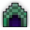 Teleportation Disabled Teleportation Disabled
|
| Dust Drops | ||
|---|---|---|
| 40-48 |
0 |
0 |
The Haunted Cemetery is a medium-level dungeon consisting of several increasingly difficult sections that each begin with a few waves of enemies and end with a boss.
This dungeon is intended for medium-level players. A great dungeon to get spare gear, as the dungeon drops a lot of Tier 5 abilities and Tier 9-11 weapons, as well as armor. The dungeon is a major source of Potions of Speed, with up to five potions potentially obtainable in a single run. It is also the main source of four untiered items: the Amulet of Dispersion, Plague Poison, Soul’s Guidance, and Resurrected Warrior’s Armor, along with the entire Skuld 2 the ReGhostening Rogue ST Set and is also another dungeon where the Tarot Card Pack can be found to get a chance to obtain any of the Tarot Card Artifacts.
Entrances to the Haunted Cemetery are dropped from Headless Horsemen in the Haunted Hallows and Lantern Holders in the Dead Church.
This dungeon must be completed to earn ‘Explosive Journey‘, ‘King of the Mountains‘, ‘Hero of the Nexus’ and ‘Realm of the Mad God’ fame bonuses.
| The Realm Eye says: |
|---|

Many years ago, adventurers such as yourself would commonly have their graves robbed by fellow explorers. To prevent this desecration, body collectors would move the corpses of the most legendary heroes to an enclosed cemetery. Grave robbery was eventually outlawed, so the graveyard fell to disuse. The heroic spirits littered within attracted Skuld, master of the afterlife, to take residence. |
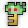 The Cemetery Key is available in the Nexus for 100  .
.
The Haunted Cemetery Guide is currently a work in progress.
The dungeon consists of three stages: the Gates, the Graves, and the Mausoleum. Each stage is a square arena, with each getting slightly bigger. After each stage is complete, a green portal appears which can be used to teleport to the next one, except of course for the last which simply spawns a normal dungeon exit portal. There is no way to return to previous stages.
In each stage except the last, Skuld taunts one of the following:
”Say, ‘READY’ when you are ready to face your opponents.”
”Prepare yourselves… and say ‘READY’ when you wish the battle to begin!”
”Say ‘READY’ when you are prepared to be relentlessly crushed.”
After a player types “ready” in the chat, 4 waves of enemies will spawn, the last of which is a boss encounter (only one of two possible bosses is selected at random). The enemies are increasingly difficult as waves and stages progress. Only the “large” enemies need to be killed to progress to the next wave. After all waves are completed, Skuld then instructs players to “proceed north” through the portal.
In the last stage, after a bit of dialogue, the boss battle against Skuld begins immediately without any preceding waves of enemies or the need to say “ready”.
“Welcome to my domain, warriors! I challenge you to defeat my undead hordes and claim your prize…”
| 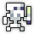 Reanimated Remains |
Forest Troll |
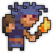 Troll Pathfinder |
 Apparition |
Haunting Spectre |
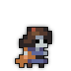 Possessed Child |
Classic Ghost |
 Werewolf |
| 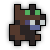 Werewolf Cub |
“This terrifying troll will send you spores and shivers all over!”
“This ghastly bride has returned from her grave to cut you down!”
“Your prowess has earned you a place in my second gauntlet! Your prize awaits beyond this challenge…”
Grave Spider |
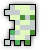 Risen Mummy |
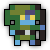 Risen Archer |
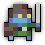 Risen Warrior |
| 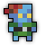 Risen Brawler |
 Risen Mage |
Vengeful Vampire |
“The king of pumpkins and jack-o-lanterns alike has arrived to carve you a permanent impression!”
“Once you’ve been trampled, my Grave Caretaker shall tend to your souls and bodies. If that sounds pleasant to you, now would be a great time to die.”
“Congratulations on your victory, warriors. For your efforts in the gauntlet, your reward shall be…”
”A SWIFT DEATH!”
The Haunted Cemetery is part of the Standard Quest pool from the Tinkerer and has four associated quests.
| Name | Description | Items Needed | Reward |
|---|---|---|---|
| The Apparition | Defeat the Ghost of Skuld in the Haunted Cemetery. |  |
 |
| To the Mountains! | Head to the mountains to take down Oryx’s generals! |      |
|
| Smite the Undead! | Put these ones back in their graves, would ya? | 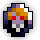 |
|
| That’s the Spirit | All sorts of ghouls lurk in the realm, some more frightening than others! | |
You are not required to clear every single enemy in each wave to progress to the next wave, only the large enemies. Waves also progress if enough time has passed, although this can lead to enemies gradually piling up and overwhelming you, so do not neglect the small enemies. Large groups are recommended for effectively clearing the large enemies and clearing the small enemies in between waves. Classes with weapons that can pierce multiple targets are also useful for cutting through hordes of enemies, such as Samurais and Sorcerers.
In Exalt Version 5.2.0.0 (Oct 2024), this dungeon received a complete rework, changing almost all content in the dungeon. See the original Haunted Cemetery here.
Before Exalt Version 5.11.0.0 (May 2025), dungeon completion gave 40-94  with 60% chance.
with 60% chance.
Before Exalt Version 5.12.0.0 (June 2025), dungeon completion gave 36-44  .
.
The surrounding pumpkins outside of the cemetery itself have various faces carved onto them. However, one pumpkin has Oryx the Mad God’s helmet carved onto it (shown left), while another pumpkin has a skull carved onto it (shown right):
The four candles in the four corners of the Mausoleum start out with red flames, but they turn green shortly before Skuld appears:
 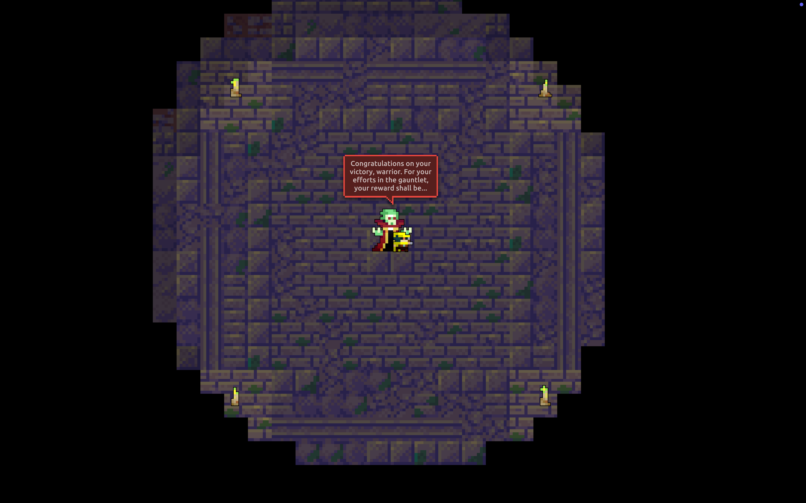
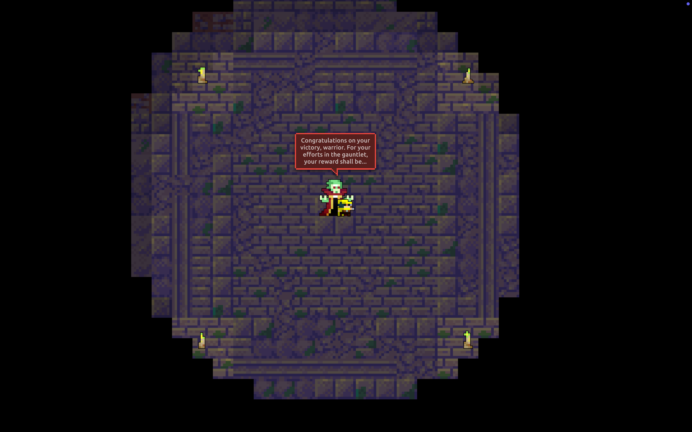


{kind=link}